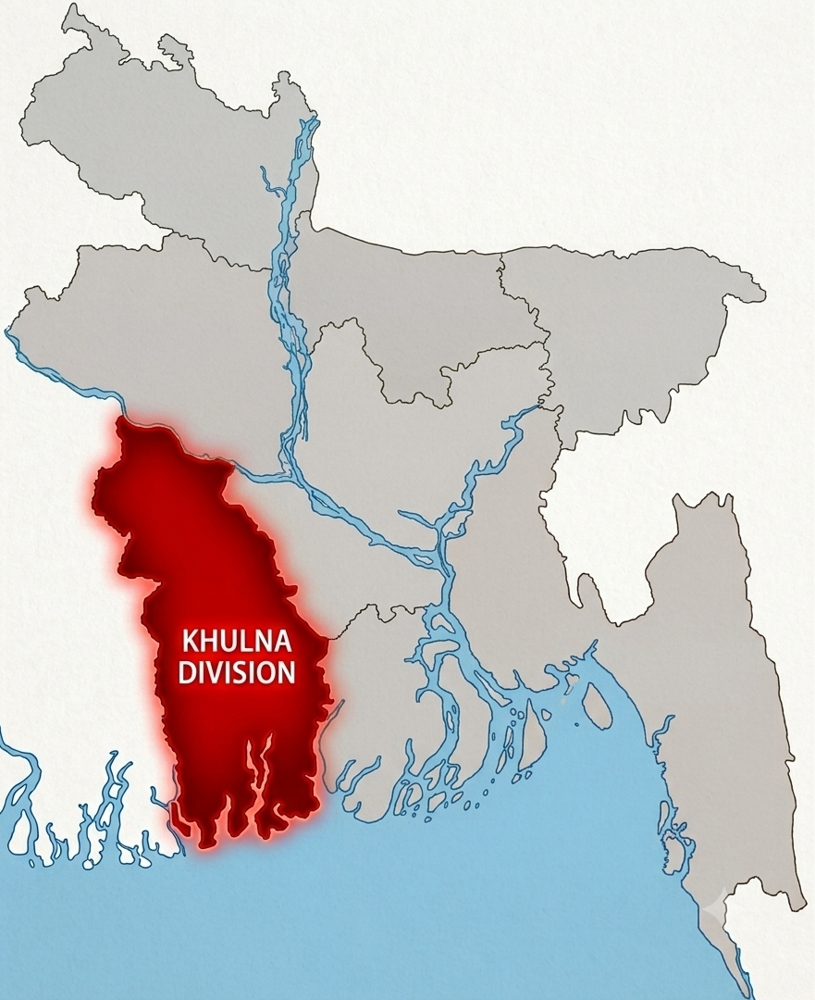
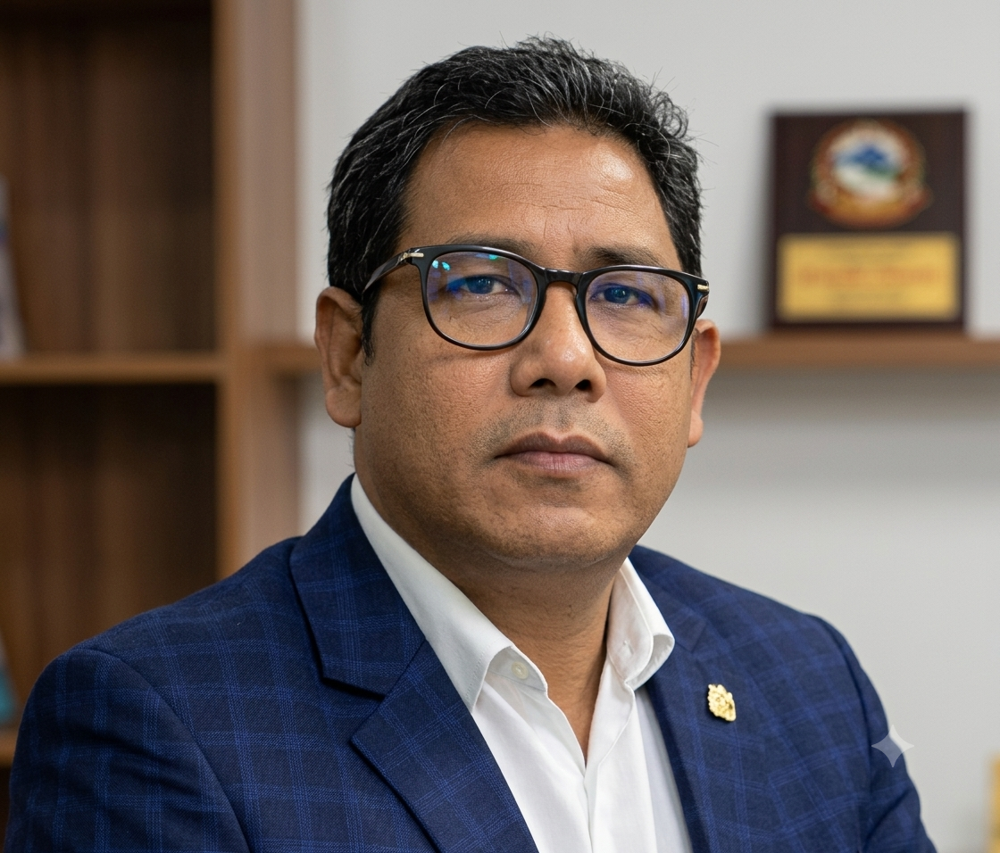

Our Story
A Non-Stop Fight Against
Khulna, Bangladesh - Since 1988
RUSTIC
RUSTIC works to reduce poverty, support communities affected by climate change, expand access to education, empower women and youth, and create sustainable opportunities. Through community-based initiatives, the organization helps vulnerable people improve their livelihoods, access essential services, develop skills, and build a safer, stronger, and more sustainable future.
..........
Our Impact
Measurable change, lasting results
For decades, RUSTIC has been working alongside vulnerable and marginalized communities across Bangladesh to create meaningful social, economic, and environmental change. Our work focuses on poverty reduction, education, livelihoods, climate resilience, environmental protection, healthcare, and community empowerment.
Five Pillars
Five pillars of sustainable development
RUSTIC’s work is built around five interconnected pillars: Poverty, Empowerment, Sustainability, Resilience, and Community. It addresses poverty by supporting vulnerable and marginalized people with opportunities to improve their livelihoods and living conditions. Through education, skills development, training, savings, and access to resources, RUSTIC empowers people to become more self-reliant and actively participate in their own development. Its commitment to sustainability promotes environmentally responsible livelihoods, including sustainable agriculture, waste management, organic farming, renewable energy, and natural resource conservation. At the same time, RUSTIC strengthens resilience by helping communities adapt to climate-related challenges such as cyclones, salinity, waterlogging, and environmental changes. At the centre of all these efforts is the community, where grassroots participation, inclusion, dignity, and collective action help create lasting social, economic, and environmental change.
Signature Program
WASTE INTO RESOURCE
From household bins to fertile soil — RUSTIC transforms daily waste into organic fertilizer, closing the loop between urban sanitation and sustainable agriculture.
Closed Loop
Climate & Environment
Protecting the Environment.
Protecting the Environment.
Building Resilience.
Forestry & Afforestation
Growing a greener future
RUSTIC’s forestry and afforestation initiatives focus on increasing tree coverage, supporting environmental protection, and contributing to the restoration of degraded landscapes. In 1998, RUSTIC planted 16,500 tree saplings along 16.5 kilometres of roadside areas across its working areas. Despite the impacts of major cyclones such as Sidr and Aila, approximately 60% of the planted trees survived, demonstrating the lasting contribution of the plantation initiative. The programme forms part of RUSTIC’s broader environmental efforts to promote reforestation, afforestation, and the protection of natural resources. By increasing vegetation and tree coverage, these initiatives contribute to a greener environment and strengthen communities’ connection with and responsibility for their surrounding ecosystems.
People & Community
Behind every statistic is a person, a family, a future
RUSTIC works with poor, vulnerable, disadvantaged, and marginalized communities to improve their quality of life and create opportunities for a more dignified future. Its community-based programmes focus on education, healthcare, safe drinking water, sanitation, livelihoods, food security, human rights, and economic self-reliance. RUSTIC strengthens communities through awareness building, skills development, capacity building, and access to essential resources and services. The organization supports women, children, families, and other vulnerable groups through practical initiatives designed around local needs. It promotes sustainable agriculture, micro-entrepreneurship, income-generating activities, and community participation. RUSTIC also works to strengthen grassroots institutions, partnerships, networks, and collective action. By helping communities identify challenges and develop practical solutions, RUSTIC encourages people to take an active role in their own development. Through these efforts, the organization works toward greater dignity, resilience, opportunity, social inclusion, and lasting self-reliance.
Education
Opening doors through education
RUSTIC works to expand access to quality education for children, young people, and adults in vulnerable communities across Khulna, Bagerhat, and Satkhira. Its education initiatives support learning through schools, educational materials, scholarships, awareness activities, and skills development. By helping learners gain knowledge, practical skills, and greater access to educational opportunities, RUSTIC aims to reduce barriers created by poverty and social disadvantage. These efforts support children’s development while also strengthening the capacity of adults and communities to pursue better livelihoods and a more secure future. Through community-based education and learning opportunities, RUSTIC contributes to building confidence, opportunity, and long-term self-reliance.
720+ students
Beneficiaries reached across Khulna.
RUSTIC has run non-formal schools and vocational training
programs.

Where We Work
Rooted in coastal Bangladesh

Organization
Driven by dedicated people

Moral Noor Mohammad
Executive DirectorMoral Noor Mohammad, born in 1951 in Bagerhat, Bangladesh, has dedicated his life to social development, environmental protection, and community empowerment. A freedom fighter of the 1971 Liberation War, he founded RUSTIC in 1988 and has since led initiatives in waste management, organic composting, climate resilience, sustainable livelihoods, and support for marginalized communities. His lifelong contributions have earned him national and international recognition, including the Ashoka Fellowship and Bangladesh’s Paribesh Padak.
Experience
leading since 1988
Freedom fighter & social worker

Monoaur Hossain
PresidentMoral Noor Mohammad, born in 1951 in Bagerhat, Bangladesh, has dedicated his life to social development, environmental protection, and community empowerment. A freedom fighter of the 1971 Liberation War, he founded RUSTIC in 1988 and has since led initiatives in waste management, organic composting, climate resilience, sustainable livelihoods, and support for marginalized communities. His lifelong contributions have earned him national and international recognition, including the Ashoka Fellowship and Bangladesh’s Paribesh Padak.
Experience
28+ years
Focus
Strategy & Growth
Our Partners
Working together for greater impact
Photo Gallery
Moments of impact & change
Explore our work through photographs — from community gatherings and classroom moments to tree planting and climate resilience efforts across coastal Bangladesh.
CHANGE BEGINS
WITH
ACTION.
Building resilient communities and protecting the environment requires collective effort. Join us in creating lasting change across coastal Bangladesh.